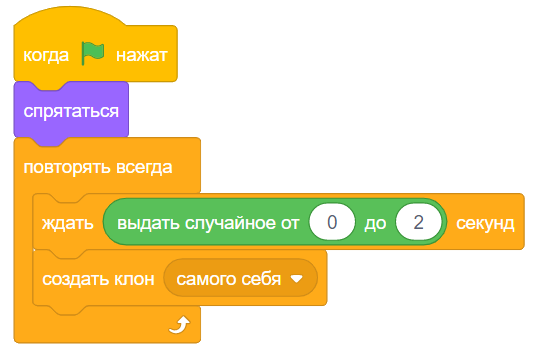

Этапы:
Этап 3
1
Роняем вкусняшки
На этом этапе настроим падение вкусняшек, естественно тебе понадобятся клоны.
Описание задания:
Нажми на флажок.
2
Когда флажок нажат спрятаться, затем нужно постоянно повторять два действия:
1) Ждать от 0 до 2 секунд,
2) Создать клон самого себя.
Весь скрипт для основного спрайта:
Когда я начинаю как клон перейти в Х равный случайное число от -220 до 220 и в Y равный 130.
Изменяй костюм на случайный от 1 до 4 (у тебя может быть другое количетсво костюмов, тогда и цифра будет другая).
Потом повторить 25 раз: изменить y на -12.
После всех этих действий удали клон.
Весь скрипт для клонов:

Теперь выполни задание, с которым ты познакомился выше:
готово:
Вкусняшки появляются постоянно с периодичностью от 0 до 2 секунд;
Вкусняшки появляются вверху, но в случайной координате Х, после чего падают вниз;
Вкусняшки удаляются, как только проделают весь свой путь;
(долетят до низа)
Вкусняшки появляются разные.
(у нас это бананы, клубника, пончик, яблоко)